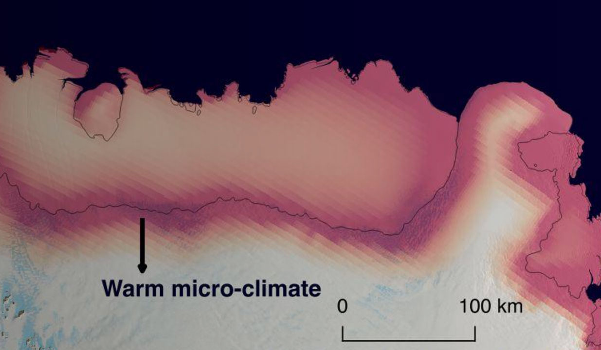
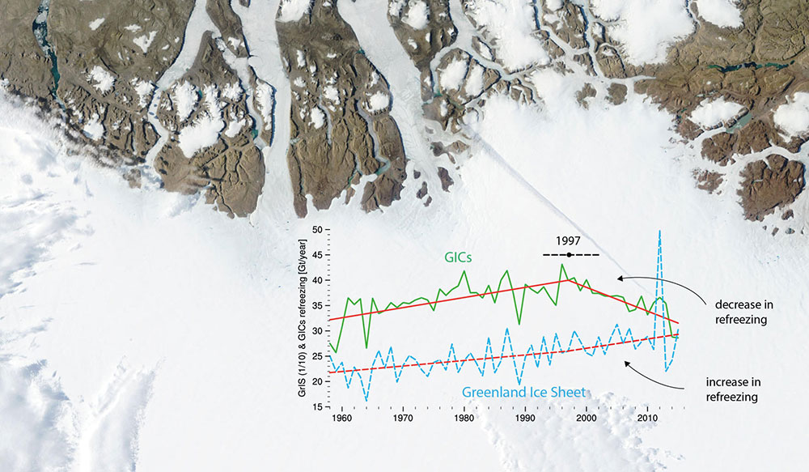
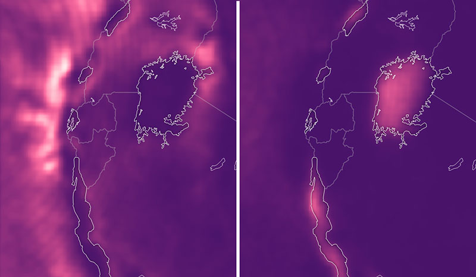

Meltwater lakes in East Antarctic
Ice shelves are the gatekeepers of Antarctica: they control how much ice flows off the ice sheet and melts into the ocean. Surface melt and subsequent firn air depletion can ultimately lead to disintegration of Antarctic ice shelves causing grounded glaciers to accelerate and sea level to rise. In this study we provide observational and model evidence that this process also occurs over an East Antarctic ice shelf, where meltwater induced firn air depletion is found in the grounding zone. In East Antarctica this meltwater is the result of a regional micro-climate as a result of wind-albedo interaction.

Clouds enhance Greenland ice sheet meltwater runoff
The Greenland ice sheet has become one of the main contributors to global sea level rise, predominantly through increased meltwater runoff. The main drivers of Greenland ice sheet runoff, however, remain poorly understood. Here we use a unique combination of active satellite observations, climate model data and snow model simulations to asses the role of Greenland cloud on meltwater runoff. Our results show that clouds enhance meltwater runoff by about one-third relative to clear skies. The sensitivity of the Greenland ice sheet to clouds highlights the need for accurate cloud representations in climate models, to better predict future contributions of the Greenland ice
sheet to global sea level rise.

Tipping points for
the Greenland ice caps
Melting of the Greenland ice sheet (GrIS) and its peripheral glaciers and ice caps (GICs) contributes about 43% to contemporary sea level rise. While patterns of GrIS mass loss are relatively well studied, the spatial and temporal evolution of GICs mass loss and the acting processes have remained unclear. Here we use a novel, high-resolution (1 km) surface mass balance product, evaluated against in-situ and remote sensing data, to identify 1997 as a tipping point for the mass balance of Greenland’s GICs. That year marks the onset of a rapid deterioration in the capacity of the GICs firn layer to refreeze meltwater.

Hazardeous thunderstorms over Lake Victoria
Weather extremes have harmful impacts on communities around Lake Victoria, where thousands of fishermen die every year because of intense night-time thunderstorms. Yet how these thunderstorms will evolve in a future warmer climate is still unknown. Here we show that Lake Victoria is projected to be a hotspot of future extreme precipitation intensification by using new satellite-based observations, a high-resolution climate projection for the African Great Lakes and coarser-scale ensemble projections. Our results highlight a major hazard associated with climate change over East Africa and underline the need for high-resolution projections to assess local climate change